The MultiHazard package provides tools for stationary multivariate statistical modeling, for example, to estimate joint occurrence probabilities of MULTIple co-occurring HAZARDs. The package contains functions for pre-processing data, including imputing missing values, detrending and declustering time series as well as analyzing pairwise correlations over a range of lags. Functionality is built in to implement the conditional sampling - copula theory approach described in Jane et al. (2020) including the automated threshold selection method from Solari et al. (2017). There is a function that calculates joint probability contours using the method of overlaying conditional contours given in Bender et al. (2016) and extracts design events such as the “most likely” event or an ensemble of possible design events. The package also includes methods from Murphy-Barltrop et al. (2023) and Murphy-Barltrop et al. (2024) for deriving isolines using the Heffernan and Tawn (2004) HT04 and Wadsworth and Tawn (2013) [WT13] models, together with a novel bootstrap procedure for quantifying sampling uncertainty in the isolines. Three higher dimensional approaches — standard (elliptic/Archimedean) copulas, Pair Copula Constructions (PCCs) and a conditional threshold exceedance approach (HT04) — are coded. Finally, the package can be implemented to derive temporally coherent extreme events comprising a hyetograph and water level curve for simulated peak rainfall and peak sea level events, as outlined in (Report).
Citation:
Jane, R., Wahl, T., Peña, F., Obeysekera, J., Murphy-Barltrop, C., Ali, J., Maduwantha, P., Li, H., and Malagón Santos, V. (under review) MultiHazard: Copula-based Joint Probability Analysis in R. Journal of Open Source Software. [under revision]
Applications of package:
Li, H., Jane, R. A., Eilander, D., Enríquez, A. R., Haer, T., and Ward, P. J. (2025). Assessing the spatial correlation of potential compound flooding in the United States, EGUsphere [preprint], https://doi.org/10.5194/egusphere-2025-2993.
Amorim, R., Villarini, G., Kim, H., Jane, R., and Wahl, T. (2025). A Practitioner’s approach to process-driven modeling of compound rainfall and storm surge extremes for coastal Texas, J. Hydrol. Eng., 30(5), 04025025, https://doi.org/10.1061/JHYEFF.HEENG-648.
Maduwantha, P., Wahl, T., Santamaria-Aguilar, S., Jane, R., Booth, J. F., Kim, H., and Villarini, G. (2024). A multivariate statistical framework for mixed storm types in compound flood analysis, Nat. Hazards Earth Syst. Sci., 24, 4091–4107, https://doi.org/10.5194/nhess-24-4091-2024.
Nasr, A. A., Wahl, T., Rashid, M. M., Jane, R., Camus, P. and Haigh, I. D. (2023). Temporal changes in dependence between compound coastal and inland flooding drivers around the contiguous United States coastline, Weather Clim. Extrem., 41, 100594, https://doi.org/10.1016/j.wace.2023.100594.
Kim, H., Villarini, G., Jane, R., Wahl, T., Misra, S., and Michalek, A. (2023). On the generation of high‐resolution probabilistic design events capturing the joint occurrence of rainfall and storm surge in coastal basins, Int. J. Climatol, 43(2), 761-771, https://doi.org/10.1002/joc.7825.
Kim, T., Villarini, G., Kim, H., Jane, R., and Wahl, T. (2023). On the compounding of nitrate loads and discharge, J. Environ. Qual., 52, 706–717. https://doi.org/10.1002/jeq2.20458.
Peña, F., Obeysekera, J., Jane R., Nardi, F., Maran, C., Cadogan, A., de Groen, F., and Melesse, A. (2023). Investigating compound flooding in a low elevation coastal karst environment using multivariate statistical and 2D hydrodynamic modeling, Weather Clim. Extrem., 39, 100534. https://doi.org/10.1016/j.wace.2022.100534.
Jane, R., Cadavid, L., Obeysekera, J., and Wahl, T. (2020). Multivariate statistical modelling of the drivers of compound flood events in South Florida, Nat. Hazards Earth Syst. Sci., 20, 2681–2699, https://doi.org/10.5194/nhess-20-2681-2020.
Community guidelines
Contributions to the MultiHazard package are welcome! Please feel free to submit issues or pull requests on GitHub.
Installation
Install the latest version of this package by entering the following in R:
install.packages("remotes")
remotes::install_github("rjaneUCF/MultiHazard")1. Introduction
The MultiHazard package provides tools for stationary multivariate statistical modeling, for example, to estimate the joint distribution of MULTIple co-occurring HAZARDs. This document is designed to explain and demonstrate the functions contained within the package. Section 1 looks at the functions concerned with pre-processing the data including imputing missing values. Section 2 illustrates the functions for detrending and declustering time series while Section 3 introduces a function that analyzes pairwise correlations over a range of lags. Section 4 shows how the conditional sampling - copula theory approach in Jane et al. (2020) can be implemented including the automated threshold selection method in Solari et al. (2017). Functions for selecting the best fitting among an array of (non-extreme, truncated and non-truncated) parametric marginal distributions, and copulas to model the dependence structure are demonstrated in this section. Section 4 also contains an explanation of the function that derives the joint probability contours according to the method of overlaying (conditional) contours given in Bender et al. (2016), and extracts design events such as the “most likely” event or an ensemble of possible design events. Section 4 also introduces the functions that generate isolines using the methods from Murphy-Barltrop et al. (2023) and Murphy-Barltrop et al. (2024), and implements a novel bootstrap procedure for quantifying sampling uncertainty in the isolines. Section 5 introduces the functions for fitting and simulating synthetic events from three higher-dimensional approaches - standard (elliptic/Archimedean) copulas, Pair Copula Constructions (PCCs) and the conditional threshold exceedance approach of HT04. Section 6 describes a function that calculates the time for a user-specified height of sea level rise to occur under various scenarios. Lastly, Section 7 shows the simulation of temporally coherent extreme rainfall and ocean water level events.
2. Pre-processing
Imputation
Well G_3356 represents the groundwater level at Site S20, however, it contains missing values. Let’s impute missing values in the record at Well G_3356 using recordings at nearby Well G_3355. First, reading in the two time series.
#Viewing first few rows of in the groundwater level records
head(G_3356)## Date Value
## 1 1985-10-23 2.46
## 2 1985-10-24 2.47
## 3 1985-10-25 2.41
## 4 1985-10-26 2.37
## 5 1985-10-27 2.63
## 6 1985-10-28 2.54
head(G_3355)## Date Value
## 1 1985-08-20 2.53
## 2 1985-08-21 2.50
## 3 1985-08-22 2.46
## 4 1985-08-23 2.43
## 5 1985-08-24 2.40
## 6 1985-08-25 2.37
#Converting Date column to "Date"" object
G_3356$Date<-seq(as.Date("1985-10-23"), as.Date("2019-05-29"), by="day")
G_3355$Date<-seq(as.Date("1985-08-20"), as.Date("2019-06-02"), by="day")
#Converting column containing the readings to a "numeric"" object
G_3356$Value<-as.numeric(as.character(G_3356$Value))
G_3355$Value<-as.numeric(as.character(G_3355$Value))Warning message confirms there are NAs in the record at Well G_3356. Before carrying out the imputation the two data frames need to be merged.
#Merge the two dataframes by date
GW_S20<-left_join(G_3356,G_3355,by="Date")
colnames(GW_S20)<-c("Date","G3356","G3355")
#Carrying out imputation
Imp<-Imputation(Data=GW_S20,Variable="G3356",
x_lab="G-3355 (ft NGVD 29)", y_lab="G-3356 (ft NGVD 29)")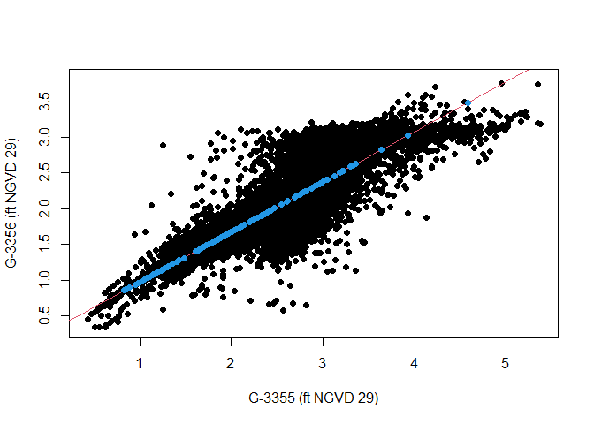
The completed record is given in the ValuesFilled column of the data frame outputted as the Data object while the linear regression model including its coefficient of determinant are given by the model output argument.
head(Imp$Data)## Date G3356 G3355 ValuesFilled
## 1 1985-10-23 2.46 2.87 2.46
## 2 1985-10-24 2.47 2.85 2.47
## 3 1985-10-25 2.41 2.82 2.41
## 4 1985-10-26 2.37 2.79 2.37
## 5 1985-10-27 2.63 2.96 2.63
## 6 1985-10-28 2.54 2.96 2.54
Imp$Model##
## Call:
## lm(formula = data[, variable] ~ data[, Other.variable])
##
## Residuals:
## Min 1Q Median 3Q Max
## -1.60190 -0.16654 0.00525 0.16858 1.73824
##
## Coefficients:
## Estimate Std. Error t value Pr(>|t|)
## (Intercept) 0.275858 0.012366 22.31 <2e-16 ***
## data[, Other.variable] 0.700724 0.004459 157.15 <2e-16 ***
## ---
## Signif. codes: 0 '***' 0.001 '**' 0.01 '*' 0.05 '.' 0.1 ' ' 1
##
## Residual standard error: 0.2995 on 11825 degrees of freedom
## (445 observations deleted due to missingness)
## Multiple R-squared: 0.6762, Adjusted R-squared: 0.6762
## F-statistic: 2.47e+04 on 1 and 11825 DF, p-value: < 2.2e-16Are any values still NA?
Linear interpolating the three remaining NAs.
Detrending
In the analysis completed O-sWL (Ocean-side Water Level) and groundwater level series are subsequently detrended. The Detrend() function uses either a linear fit covering the entire data (Method=linear) or moving average window (Method=window) of a specified length (Window_Width) to remove trends from a time series. The residuals are added to the final End_Length observations. The default Detrend() parameters specify a moving average (Method=window) three month window (Window_Width=89), to remove any seasonality from the time series. The default is then to add the residuals to the average of the final five years of observations (End_Length=1826) to bring the record to the present day level, accounting for the Perigean tide in the case of O-sWL. The mean of the observations over the first three months were subtracted from the values during this period before the present day (5-year) average was added. The following R code detrends the record at Well G_3356. Note the function requires a Date object and the completed series.
#Creating a data frame with the imputed series alongside the corresponding dates
G_3356_Imp<-data.frame(Imp$Data$Date,Imp$Data$ValuesFilled)
colnames(G_3356_Imp)<-c("Date","ValuesFilled")
#Detrending
G_3356_Detrend<-Detrend(Data=G_3356_Imp,PLOT=TRUE,x_lab="Date",
y_lab="Groundwater level (ft NGVD 29)")
Output of the function is simply the detrended time series.
head(G_3356_Detrend)Creating a data frame containing the detrended groundwater series at site S_20 i.e. G_3356_Detrend and their corresponding dates
S20.Groundwater.Detrend.df<-data.frame(as.Date(GW_S20$Date),G_3356_Detrend)
colnames(S20.Groundwater.Detrend.df)<-c("Date","Groundwater")Declustering
The Decluster() function declusters a time series using a threshold u specified as a quantile of the completed series and separation criterion SepCrit to ensure independent events. If mu=365.25 then SepCrit denotes the minimum number of days readings must remain below the threshold before a new event is defined.
G_3356.Declustered<-Decluster(Data=G_3356_Detrend,u=0.95,SepCrit=3,mu=365.25)Plot showing the completed, detrended record at Well G-3356 (grey circles) along with cluster maxima (red circles) identified using a 95% threshold (green line) and three day separation criterion.
G_3356_Imp$Detrend<-G_3356_Detrend
plot(as.Date(G_3356_Imp$Date),G_3356_Imp$Detrend,col="Grey",pch=16,
cex=0.25,xlab="Date",ylab="Groundwater level (ft NGVD 29)")
abline(h=G_3356.Declustered$Threshold,col="Dark Green")
points(as.Date(G_3356_Imp$Date[G_3356.Declustered$EventsMax]),
G_3356.Declustered$Declustered[G_3356.Declustered$EventsMax],
col="Red",pch=16,cex=0.5)
Other outputs from the Decluster() function include the threshold on the original scale
G_3356.Declustered$Thresholdand the number of events per year
G_3356.Declustered$RateIn preparation for later work, lets assign the detrended and declustered groundwater series at site S20 a name.
S20.Groundwater.Detrend.Declustered<-G_3356.Declustered$DeclusteredReading in the other rainfall and O-sWL series at Site S20
#Changing names of the data frames
S20.Rainfall.df<-Perrine_df
S20.OsWL.df<-S20_T_MAX_Daily_Completed_Detrend_Declustered[,c(2,4)]
#Converting Date column to "Date"" object
S20.Rainfall.df$Date<-as.Date(S20.Rainfall.df$Date)
S20.OsWL.df$Date<-as.Date(S20.OsWL.df$Date)Detrending and declustering the rainfall and O-sWL series at Site S20
S20.OsWL.Detrend<-Detrend(Data=S20.OsWL.df,Method = "window",PLOT=FALSE,
x_lab="Date",y_lab="O-sWL (ft NGVD 29)")Creating a dataframe with the date alongside the detrended OsWL series
S20.OsWL.Detrend.df<-data.frame(as.Date(S20.OsWL.df$Date),S20.OsWL.Detrend)
colnames(S20.OsWL.Detrend.df)<-c("Date","OsWL")Declustering rainfall and O-sWL series at site S20,
#Declustering rainfall and O-sWL series
S20.Rainfall.Declustered<-Decluster(Data=S20.Rainfall.df$Value,u=0.95,SepCrit=3)$Declustered
S20.OsWL.Detrend.Declustered<-Decluster(Data=S20.OsWL.Detrend,u=0.95,SepCrit=3,mu=365.25)$DeclusteredCreating data frames with the date alongside declustered series
S20.OsWL.Detrend.Declustered.df<-data.frame(S20.OsWL.df$Date,S20.OsWL.Detrend.Declustered)
colnames(S20.OsWL.Detrend.Declustered.df)<-c("Date","OsWL")
S20.Rainfall.Declustered.df<-data.frame(S20.Rainfall.df$Date,S20.Rainfall.Declustered)
colnames(S20.Rainfall.Declustered.df)<-c("Date","Rainfall")
S20.Groundwater.Detrend.Declustered.df<-data.frame(G_3356$Date,S20.Groundwater.Detrend.Declustered)
colnames(S20.Groundwater.Detrend.Declustered.df)<-c("Date","Groundwater")Use the Dataframe_Combine() function to create data frames containing all observations of the original, detrended if necessary, and declustered time series. On dates where not all variables are observed, missing values are assigned NA.
S20.Detrend.df<-Dataframe_Combine(data.1<-S20.Rainfall.df,
data.2<-S20.OsWL.Detrend.df,
data.3<-S20.Groundwater.Detrend.df,
names=c("Rainfall","OsWL","Groundwater"))
S20.Detrend.Declustered.df<-Dataframe_Combine(data.1<-S20.Rainfall.Declustered.df,
data.2<-S20.OsWL.Detrend.Declustered.df,
data.3<-S20.Groundwater.Detrend.Declustered.df,
names=c("Rainfall","OsWL","Groundwater"))The package contains two other declustering functions. The Decluster_SW() function declusters a time series via a storm window approach. A moving window of length (Window_Width) is moved over the time series, if the maximum value is located at the center of the window then the value is considered a peak and retained, otherwise it is set equal to NA. For a seven day window at S20:
S20.Rainfall.Declustered.SW<-Decluster_SW(Data=S20.Rainfall.df,Window_Width=7)Plotting the original and detrended series:
plot(S20.Rainfall.df$Date,S20.Rainfall.df$Value,pch=16,cex=0.5,
xlab="Date",ylab="Total daily rainfall (Inches)")
points(S20.Rainfall.df$Date,S20.Rainfall.Declustered.SW$Declustered,pch=16,col=2,cex=0.5)
Repeating the analysis for the O-sWL with a 3-day window.
S20.OsWL.Declustered.SW<-Decluster_SW(Data=S20.OsWL.df,Window_Width=3)The Decluster_S_SW() function declusters a summed time series via a storm window approach. First a moving window of width (Window_Width_Sum) travels across the data and each time the values are summed. As with the Decluster_SW() function a moving window of length (Window_Width) is then moved over the time series, if the maximum value in a window is located at its center then the value considered a peak and retained, otherwise it is set equal to NA. To decluster weekly precipitation totals using a seven day storm window at S20:
#Declustering
S20.Rainfall.Declustered.S.SW<-Decluster_S_SW(Data=S20.Rainfall.df,
Window_Width_Sum=7, Window_Width=7)
#First twenty values of the weekly totals
S20.Rainfall.Declustered.S.SW$Totals[1:20]## [1] NA NA NA 0.23 0.19 0.10 1.56 1.94 2.04 2.04 2.04 2.91 3.02 2.75 3.15
## [16] 3.05 3.05 3.05 2.18 2.03
#First ten values of the declustered weekly totals
S20.Rainfall.Declustered.S.SW$Declustered[1:20]Plotting the original and detrended series:
plot(S20.Rainfall.df$Date,S20.Rainfall.Declustered.S.SW$Totals,pch=16,cex=0.5,
xlab="Date",ylab="Total weekly rainfall (Inches)")
points(S20.Rainfall.df$Date,S20.Rainfall.Declustered.S.SW$Declustered,pch=16,col=2,cex=0.5)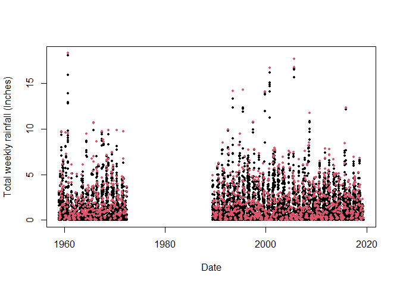
Fit GPD
The GPD_Fit() function fits a generalized Pareto distribution (GPD) to observations above a threshold u, specified as a quantile of the completed time series. To fit the distribution the GPD_Fit() function requires the declustered series as its Data argument and the entire completed series, detrended if necessary, as its Data_Full argument. The completed series is required to calculate the value on the original scale corresponding to u. If PLOT=TRUE then diagnostic plots are produced to allow an assessment of the fit.
GPD_Fit(Data=S20.Detrend.Declustered.df$Rainfall,Data_Full=na.omit(S20.Detrend.df$Rainfall),
u=0.997,PLOT=TRUE,xlab_hist="Rainfall (Inches)",y_lab="Rainfall (Inches)")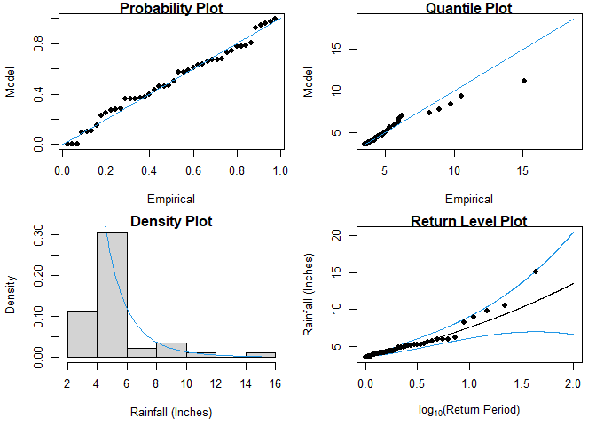
Solari (2017) automated threshold selection
Solari et al. (2017) proposes a methodology for automatic threshold estimation, based on an EDF-statistic and a goodness of fit test to test the null hypothesis that exceedances of a high threshold come from a GPD distribution.
EDF-statistics measure the distance between the empirical distribution obtained from the sample and the parametric distribution
. The Anderson Darling
statistic is an EDF-statistic, which assigns more weight to the tails of the data than similar measures. Sinclair et al. (1990) proposed the right-tail weighted Anderson Darling statistic
which allocates more weight to the upper tail and less to the lower tail of the distribution than
and is given by:
where and
is the sample size. The approach in Solari et al. (2017) is implemented as follows:
- A time series is declustered using the storm window approach to identify independent peaks.
- Candidate thresholds are defined by ordering the peaks and removing any repeated values. A GPD is fit to all the peaks above each candidate threshold. The right-tail weighted Anderson-Darling statistic
and its corresponding p-value are calculated for each threshold.
- The threshold that minimizes one minus the p-value is then selected.
The GPD_Threshold_Solari() function carries out these steps.
S20.Rainfall.Solari<-GPD_Threshold_Solari(Event=S20.Rainfall.Declustered.SW$Declustered,
Data=S20.Detrend.df$Rainfall)## Error in solve.default(family$info(o)) :
## system is computationally singular: reciprocal condition number = 2.95579e-17
## Error in diag(o$cov) : invalid 'nrow' value (too large or NA)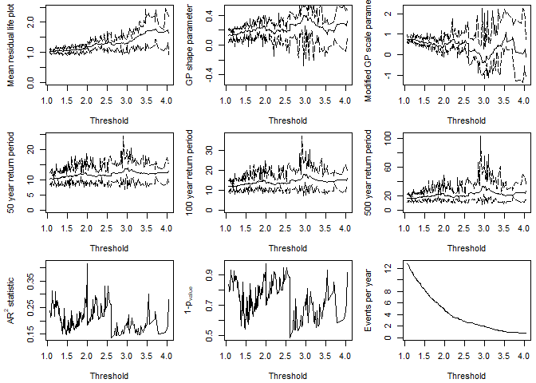
The optimum threshold according to the Solari approach is
S20.Rainfall.Solari$Candidate_Thres
Rainfall.Thres.Quantile<-ecdf(S20.Detrend.df$Rainfall)(S20.Rainfall.Solari$Candidate_Thres)The GPD_Threshold_Solari_Sel() allows the goodness-of-fit at a particular threshold (Thres) to be investigated in more detail. Let’s study the fit of the threshold selected by the method.
Solari.Sel<-GPD_Threshold_Solari_Sel(Event=S20.Rainfall.Declustered.SW$Declustered,
Data=S20.Detrend.df$Rainfall,
Solari_Output=S20.Rainfall.Solari,
Thres=S20.Rainfall.Solari$Candidate_Thres,
RP_Max=100)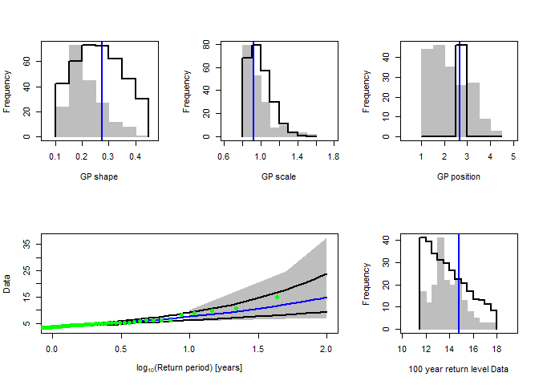
Repeating the automated threshold selection procedure for O-sWL.
S20.OsWL.Solari<-GPD_Threshold_Solari(Event=S20.OsWL.Declustered.SW$Declustered,
Data=S20.Detrend.df$OsWL)## Error in solve.default(family$info(o)) :
## system is computationally singular: reciprocal condition number = 8.64997e-17
## Error in diag(o$cov) : invalid 'nrow' value (too large or NA)
## Error in solve.default(family$info(o)) :
## system is computationally singular: reciprocal condition number = 4.62425e-17
## Error in diag(o$cov) : invalid 'nrow' value (too large or NA)
## Error in solve.default(family$info(o)) :
## Lapack routine dgesv: system is exactly singular: U[2,2] = 0
## Error in diag(o$cov) : invalid 'nrow' value (too large or NA)
## Error in solve.default(family$info(o)) :
## system is computationally singular: reciprocal condition number = 4.20545e-17
## Error in diag(o$cov) : invalid 'nrow' value (too large or NA)
## Error in solve.default(family$info(o)) :
## system is computationally singular: reciprocal condition number = 1.05465e-16
## Error in diag(o$cov) : invalid 'nrow' value (too large or NA)
## Error in solve.default(family$info(o)) :
## Lapack routine dgesv: system is exactly singular: U[2,2] = 0
## Error in diag(o$cov) : invalid 'nrow' value (too large or NA)
## Error in solve.default(family$info(o)) :
## system is computationally singular: reciprocal condition number = 4.43525e-17
## Error in diag(o$cov) : invalid 'nrow' value (too large or NA)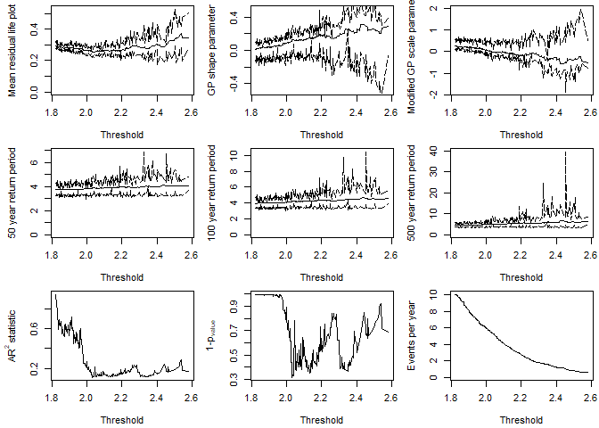
S20.OsWL.Solari$Candidate_Thres
OsWL.Thres.Quantile<-ecdf(S20.Detrend.df$OsWL)(S20.OsWL.Solari$Candidate_Thres)and checking the fit of the GPD at the selected threshold.
Solari.Sel<-GPD_Threshold_Solari_Sel(Event=S20.OsWL.Declustered.SW$Declustered,
Data=S20.Detrend.df$OsWL,
Solari_Output=S20.OsWL.Solari,
Thres=S20.OsWL.Solari$Candidate_Thres,
RP_Max=100)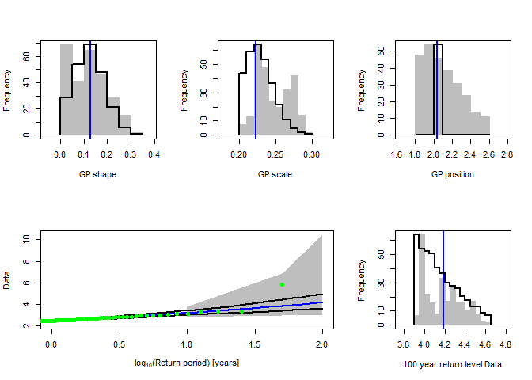
3. Correlation analysis
We can use the Kendall_Lag() function to view the Kendall’s rank correlations coefficient between the time series over a range of lags
S20.Kendall.Results<-Kendall_Lag(Data=S20.Detrend.df,GAP=0.2)
Let’s pull out the Kendall correlation coefficient values between rainfall and O-sWL for lags of applied to the latter quantity
S20.Kendall.Results$Value$Rainfall_OsWL## [1] 0.046483308 0.051860955 0.051392298 0.051311970 0.054097316
## [6] 0.058316831 0.061388245 0.035305812 0.004206059 -0.014356749
## [11] -0.025993095 -0.030431776 -0.029481162and the corresponding p-values testing the null hypothesis
S20.Kendall.Results$Test$Rainfall_OsWL_Test4. Bivariate Analysis
Two-sided conditional sampling - copula theory method
In the report the 2D analysis considers the two forcings currently accounted for in structural design assessments undertaken by SFWMD: rainfall and O-sWL. The 2D analysis commences with the well-established two-sided conditional sampling approach, where excesses of a conditioning variable are paired with co-occurring values of another variable to create two samples. For each sample the marginals (one extreme, one non-extreme) and joint distribution are then modeled.
The two (conditional) joint distributions are modeled independently of the marginals by using a copula. The Copula_Threshold_2D() function explores the sensitivity of the best fitting copula, in terms of Akaike Information Criterion (AIC), to allow the practitioner to make an informed choice with regards to threshold selection. It undertakes the conditional sampling described above and reports the best fitting bivariate copula. The procedure is carried out for a single or range of thresholds specified by the u argument and the procedure is automatically repeated with the variables switched.
Copula_Threshold_2D(Data_Detrend=S20.Detrend.df[,-c(1,4)],
Data_Declust=S20.Detrend.Declustered.df[,-c(1,4)],
y_lim_min=-0.075, y_lim_max =0.25,
Upper=c(2,9), Lower=c(2,10),GAP=0.15)
## $Kendalls_Tau1
## [1] 0.05627631 0.05803451 0.05900376 0.08072261 0.10731477 0.14151449
## [7] 0.14427232 0.14762199 0.13101587 0.05056147
##
## $p_value_Var1
## [1] 7.698074e-03 9.251524e-03 1.424015e-02 1.974145e-03 1.559739e-04
## [6] 1.171141e-05 4.256557e-05 2.055448e-04 6.000832e-03 4.413023e-01
##
## $N_Var1
## [1] 1008 904 776 661 559 432 363 286 200 107
##
## $Copula_Family_Var1
## [1] 6 6 6 6 6 6 6 13 6 6
##
## $Kendalls_Tau2
## [1] 0.1113049 0.1359921 0.1377104 0.1561184 0.1579352 0.1359861 0.1183870
## [8] 0.1463056 0.1482198 0.1904729
##
## $p_value_Var2
## [1] 2.720713e-05 2.549673e-06 1.199322e-05 1.143046e-05 1.879301e-04
## [6] 1.335664e-02 5.199742e-02 3.145804e-02 6.891926e-02 8.220838e-02
##
## $N_Var2
## [1] 760 639 535 416 290 168 136 110 77 43
##
## $Copula_Family_Var2
## [1] 6 6 6 6 204 204 204 204 1 204The Diag_Non_Con() function is designed to aid in the selection of the appropriate (non-extreme) unbounded marginal distribution for the non-conditioned variable.
S20.Rainfall<-Con_Sampling_2D(Data_Detrend=S20.Detrend.df[,-c(1,4)],
Data_Declust=S20.Detrend.Declustered.df[,-c(1,4)],
Con_Variable="Rainfall",u = Rainfall.Thres.Quantile)
Diag_Non_Con(Data=S20.Rainfall$Data$OsWL,Omit=c("Gum","RGum"),x_lab="O-sWL (ft NGVD 29)",y_lim_min=0,y_lim_max=1.5)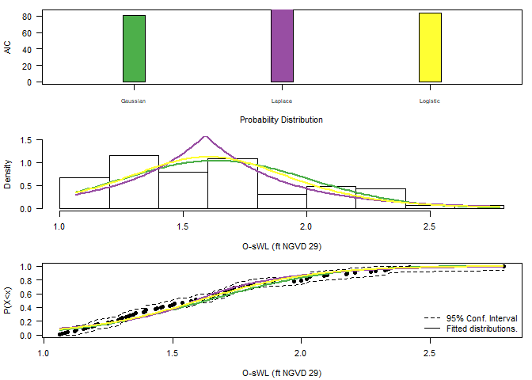
## $AIC
## Distribution AIC
## 1 Gaus 81.27871
## 2 Gum NA
## 3 Lapl 92.82204
## 4 Logis 84.19031
## 5 RGum NA
##
## $Best_fit
## [1] "Gaus"The Diag_Non_Con_Sel() function, is similar to the Diag_Non_Con() command, but only plots the probability density function and cumulative distribution function of a (single) selected univariate distribution in order to more clearly demonstrate the goodness of fit of a particular distribution. The options are the Gaussian (Gaus), Gumbel (Gum), Laplace (Lapl), logistic (Logis) and reverse Gumbel (RGum) distributions.
Diag_Non_Con_Sel(Data=S20.Rainfall$Data$OsWL,x_lab="O-sWL (ft NGVD 29)",
y_lim_min=0,y_lim_max=1.5,Selected="Logis")
A generalized Pareto distribution is fitted to the marginal distribution of the conditioning variable i.e. the declustered excesses identified using Con_Sampling_2D().
The process of selecting a conditional sample and fitting marginal distributions is repeated but instead conditioning on O-sWL. The non-conditional variable in this case is (total daily) rainfall, which has a lower bound at zero, and thus requires a suitably truncated distribution. The Diag_Non_Con_Trunc fits a selection of truncated distributions to a vector of data. The Diag_Non_Con_Sel_Trunc function is analogous to the Diag_Non_Con_Sel function, available distributions are the Birnbaum-Saunders (BS), exponential (Exp), gamma (Gam(2)), inverse Gaussian (InvG), lognormal (LogN), Tweedie (Twe) and Weibull (Weib). If the gamlss and gamlss.mx packages are loaded then the three-parameter gamma (Gam(3)), two-parameter mixed gamma (GamMix(2)) and three-parameter mixed gamma (GamMix(3)) distributions are also tested.
S20.OsWL<-Con_Sampling_2D(Data_Detrend=S20.Detrend.df[,-c(1,4)],
Data_Declust=S20.Detrend.Declustered.df[,-c(1,4)],
Con_Variable="OsWL",u=OsWL.Thres.Quantile)
S20.OsWL$Data$Rainfall<-S20.OsWL$Data$Rainfall+runif(length(S20.OsWL$Data$Rainfall),0.001,0.01)
Diag_Non_Con_Trunc(Data=S20.OsWL$Data$Rainfall+0.001,x_lab="Rainfall (Inches)",
y_lim_min=0,y_lim_max=2)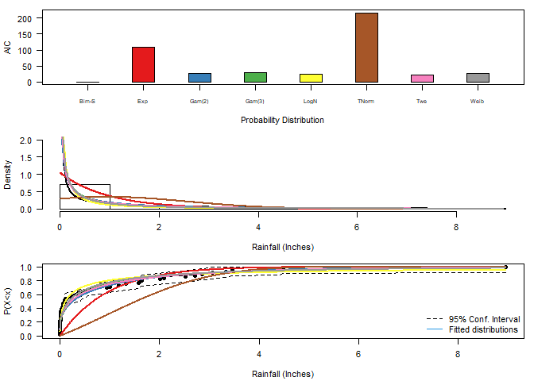
## $AIC
## Distribution AIC
## 1 BS 0.2630392
## 2 Exp 109.0840279
## 3 Gam(2) 27.8836710
## 4 Gam(3) 28.9600006
## 5 LNorm 24.4843990
## 6 TNorm 216.4303270
## 7 Twe 22.8913129
## 8 Weib 26.2243487
##
## $Best_fit
## [1] "BS"
Diag_Non_Con_Trunc_Sel(Data=S20.OsWL$Data$Rainfall+0.001,x_lab="Rainfall (Inches)",
y_lim_min=0,y_lim_max=2,
Selected="BS")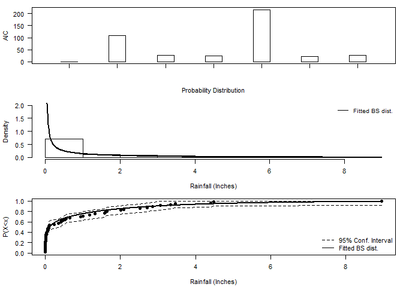
The Design_Event_2D() function finds the isoline associated with a particular return period, by overlaying the two corresponding isolines from the joint distributions fitted to the conditional samples using the method in Bender et al. (2016). Design_Event_2D() requires the copulas families chosen to model the dependence structure in the two conditional samples as input.
S20.Copula.Rainfall<-Copula_Threshold_2D(Data_Detrend=S20.Detrend.df[,-c(1,4)],
Data_Declust=S20.Detrend.Declustered.df[,-c(1,4)],
u1=Rainfall.Thres.Quantile,u2=NA,
y_lim_min=0,y_lim_max=0.25, GAP=0.075)$Copula_Family_Var1
S20.Copula.OsWL<-Copula_Threshold_2D(Data_Detrend=S20.Detrend.df[,-c(1,4)],
Data_Declust=S20.Detrend.Declustered.df[,-c(1,4)],
u1=NA,u2=OsWL.Thres.Quantile,
y_lim_min=0,y_lim_max=0.25,GAP=0.075)$Copula_Family_Var2
As input the function requires
-
Data= Original (detrended) rainfall and O-sWL series -
Data_Con1/Data_Con2= two conditionally sampled data sets, -
u1/u2orThres1/Thres2= two thresholds associated with the conditionally sampled data sets -
Copula_Family1/Copula_Family2two families of the two fitted copulas -
Marginal_Dist1/Marginal_Dist2Selected non-extreme marginal distributions -
RP= Return Period of interest -
N= size of the sample from the fitted joint distributions used to estimate the density along the isoline of interest -
N_Ensemble= size of the ensemble of events sampled along the isoline of interest
S20.Bivariate<-Design_Event_2D(Data=S20.Detrend.df[,-c(1,4)],
Data_Con1=S20.Rainfall$Data,
Data_Con2=S20.OsWL$Data,
u1=Rainfall.Thres.Quantile,
u2=OsWL.Thres.Quantile,
Copula_Family1=S20.Copula.Rainfall,
Copula_Family2=S20.Copula.OsWL,
Marginal_Dist1="Logis", Marginal_Dist2="BS",
x_lab="Rainfall (Inches)",y_lab="O-sWL (ft NGVD 29)",
RP=100,N=10^7,N_Ensemble=10)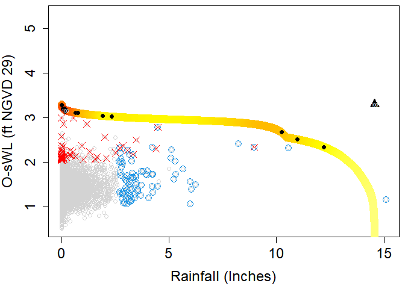
Design event according to the “Most likely” event approach (diamond in the plot)
S20.Bivariate$MostLikelyEvent$`100`Design event under the assumption of full dependence (triangle in the plot)
S20.Bivariate$FullDependence$`100`Cooley (2019) projection method
Cooley et al. (2019) puts forward a non-parametric approach for constructing the isoline associated with exceedance probability . The approach centers around constructing a base isoline with a larger exceedance probability
and projecting it to more extreme levels.
should be small enough to be representative of the extremal dependence but large enough for sufficient data to be involved in the estimation procedure.
The approach begins by approximating the joint survival function via a kernel density estimator from which the base isoline is derived. For the marginal distributions, a GPD is fit above a sufficiently high threshold to allow extrapolation into the tails and the empirical distribution is used below the threshold. Unless the joint distribution of the two variables is regularly varying, a marginal transformation is required for the projection. The two marginals are thus transformed to Frechet scales. For asymptotic dependence, on the transformed scale the isoline with exceedance probability can be obtained as
where
. For the case of asymptotic independence,
, where
is the tail dependence coefficient. Applying the inverse Frechet transformation gives the isoline on the original scale.
Let’s estimate the 100-year (p=0.01) rainfall-OsWL isoline at S20 using the 10-year isoline as the base isoline.
#Fitting the marginal distribution
#See next section for information on the Migpd_Fit function
S20.GPD<-Migpd_Fit(Data=S20.Detrend.Declustered.df[,2:3], Data_Full = S20.Detrend.df[,2:3],
mqu =c(0.99,0.99))
#10-year exceedance probability for daily data
p.10<-(1/365.25)/10
#10-year exceedance probability for daily data
p.100<-(1/365.25)/100
#Calculating the isoline
isoline<-Cooley19(Data=na.omit(S20.Detrend.df[,2:3]),Migpd=S20.GPD,
p.base=p.10,p.proj=p.100,PLOT=TRUE,x_lim_max_T=15000,y_lim_max_T=15000)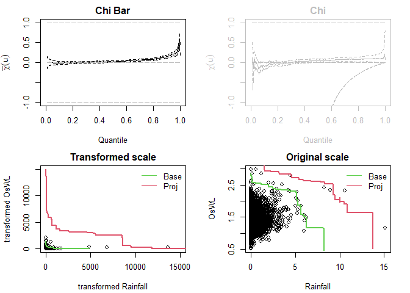
Radial-based isolines
When the dependence structure between two variables differs significantly across conditional samples — as captured by their respective copulas — it can produce an inflection point in certain regions of the probability space when overlaying the partial isolines. While these effects are mathematically sound, they represent methodological artifacts rather than natural phenomena, potentially limiting the physical interpretability of results in these regions of the joint distribution. Murphy-Barltrop et al. (2023) proposed new estimation methods for bivariate isolines that avoid fitting copulas while accounting for both asymptotic independence (AI) and asymptotic dependence (AD). Their techniques exploit existing bivariate extreme value models — specifically the Heffernan and Tawn (2004) HT04 and Wadsworth and Tawn (2013) [WT13] approaches. An additional benefit of these new approaches is that it is possible to derive confidence intervals that account for the sampling uncertainty.
When employing the HT04 model to construct the isoline with exceedance probability , the first step is to convert the variables
to the Laplace scale
. The HT04 model is a conditional exceedance model and is therefore fit twice, conditioning on both
and
separately, thus allowing us to estimate the curve in different regions. In particular, we consider the regions defined by
where
and
where $ y_{L} x_{L}$. For region
, we start by selecting a high threshold
such that
and fit the HT04 model to observations where
. Next, a decreasing series of thresholds is defined in the interval
where
is the minimal quantile for which the fitted model is valid and
is the limit that values can attain on this curve. For a given quantile in the interval
, use the model to simulate from the conditional distribution
and estimate
the
th quantile. Since
and
, the point lies on the isoline. The process is repeated until a value
where
is obtained or we exhaust all values in the interval. A very similar procedure is implemented for region
, this time selecting
, a high quantile of
for quantiles in the interval
where
if it exists and
otherwise.
The WT13 model is defined in terms of where
are a pair of variables with standard exponential marginal distributions, for any ray in
,
where is slowly varying for each ray
and
is termed the angular dependence function. To find the isoline with exceedance probability
, a set
of equally spaced rays on
is defined and for each ray estimating the angular dependence function via the Hill estimator
using observations above the
quantile of the variable
. For any large
, WT13 states that
for any
and
. If
is the
quantile of
i.e.,
, then
. Re-arranging for gives
. An estimate for the return curve with exceedance probability
is obtained by letting
.
The confidence intervals for isolines are estimated using a bootstrap procedure following the methodology outlined in Murphy-Barltrop et al. (2023). In the procedure a set of rays are defined at equally-spaced angles within the interval . Each ray intersects the isoline exactly once, and since the angle is fixed, the L2 norm represents the radial distance to the intersection point. Next, the observed data set is bootstrapped a large number of times (e.g., 1000 iterations) to generate multiple samples of the same size as the original data set. For each bootstrap sample, the L2 norm is calculated for each ray’s intersection with the fitted isoline. The confidence intervals are then derived by computing the relevant percentiles (e.g., 2.5th and 97.5th percentiles for 95% confidence intervals) of these L2 norms across all bootstrap iterations.
The return_curve_est function derives isolines for a given rp. The quantiles q of the GPDs of the HT04 and WT13 models must be specified along with the average occurrence frequency of the events in the data mu. The methods for declustering the time series and the associated parameters are also required. The bootstrapping procedure for estimate the sampling uncertainty can be carried out using a basic (boot_method = "basic"), block (boot_method = "block") or monthly (boot_method = "month") bootstrap. The latter two are recommend where there is a temporal dependence in the data. For the basic bootstrap whether the sampling is carried out with boot_replace = T or without boot_replace = F replacement must be specified while the block bootstrap require "block_length". The number of number of rays along which to compute points on the curve for each sample n_grad is another input. For the relative likelihood of points on the isoline to be estimated based on the observations set most_likely = T. For the HT04 model the number of simulations n_sim is required. The function is implemented to find the 100-year isoline at S-22.
#Adding dates to complete final month of combined records
final.month = data.frame(seq(as.Date("2019-02-04"),as.Date("2019-02-28"),by="day"),NA,NA,NA)
colnames(final.month) = c("Date","Rainfall","OsWL","Groundwater")
S22.Detrend.df.extended = rbind(S22.Detrend.df,final.month)
#Derive return curves
curve = return_curve_est(data=S22.Detrend.df.extended[,1:3],
q=0.985,rp=100,mu=365.25,n_sim=100,
n_grad=50,n_boot=100,boot_method="monthly",
boot_replace=NA, block_length=NA, boot_prop=0.8,
decl_method_x="runs", decl_method_y="runs",
window_length_x=NA,window_length_y=NA,
u_x=0.95, u_y=0.95,
sep_crit_x=36, sep_crit_y=36,
most_likely=T, n_ensemble=10,
alpha=0.1, x_lab=NA, y_lab=NA)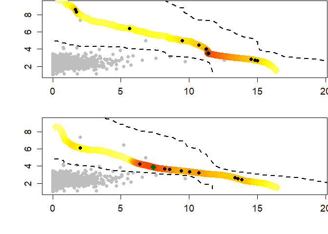
The first points on the median curve using the WT13 model are:
head(curve$median_wt13)## Rainfall OsWL
## 1 0.2316079 8.538508
## 2 0.2550617 8.535290
## 3 0.2785156 8.532072
## 4 0.3019694 8.528854
## 5 0.3254232 8.525636
## 6 0.3488771 8.522418and the corresponding elements of the upper and lower confident bounds are:
head(curve$ub_wt13)## Rainfall OsWL
## [1,] 0.5506227 18.89288
## [2,] 0.7988372 13.97289
## [3,] 1.1172359 13.07803
## [4,] 1.3227231 11.70317
## [5,] 1.6152622 11.42682
## [6,] 1.8764467 11.05923
head(curve$lb_wt13)## Rainfall OsWL
## [1,] 0.1194032 4.896642
## [2,] 0.2327272 4.794399
## [3,] 0.3496448 4.794399
## [4,] 0.4672318 4.794399
## [5,] 0.5857196 4.794399
## [6,] 0.6924922 4.725637Events estimated to possess a -year joint return period.
#"Most-likely" design event
curve$most_likely_wt13
#Ensemble of ten design events
curve$ensemble_wt13## Rainfall OsWL
## 249 2.009748 6.119263
## 654 9.424851 3.476742
## 680 10.012015 3.367404
## 846 13.564076 2.557328
## 864 13.855659 2.412782
## 832 13.337290 2.669752
## 616 8.548467 3.617731
## 601 8.205264 3.676474
## 710 10.681800 3.233014
## 509 6.391993 4.248779The return_curve_diag() function calculates the empirical probability of observing data within the survival regions defined by a subset of points on the return curve. If the curve is a good fit, the empirical probabilities should closely match the probabilities associated with the return level curve. The procedure which is introduced in Murphy-Barltrop et al. (2023) uses bootstrap resampling of the original data set to obtain confidence intervals for the empirical estimates. Since observations are required in the survival regions to estimate the empirical probabilities, it is recommended that this function be run for shorter return periods that may usually be considered for design e.g., for a 1-year return period rather than a 50-year return period. The inputs are almost identical to those of the return_curve_est function. The only additional arguments are boot_method_all which details the bootstrapping procedure - basic or block - to use when estimating the distribution of empirical (survival) probabilities from the original data set (without any declustering), boot_replace_all which specifies whether to sample with replacement in the case of a basic bootstrap and block_length_all which specifies the block length for the block bootstrap.
#Diagnostic plots for the return curves
curve = return_curve_diag(data=S22.Detrend.df.extended[,1:3],
q=0.985,rp=1,mu=365.25,n_sim=100,
n_grad=50,n_boot=100,boot_method="monthly",
boot_replace=NA, block_length=NA, boot_prop=0.8,
decl_method_x="runs", decl_method_y="runs",
window_length_x=NA,window_length_y=NA,
u_x=0.95, u_y=0.95,
sep_crit_x=36, sep_crit_y=36,
alpha=0.1,
boot_method_all="block", boot_replace_all=NA,
block_length_all=14)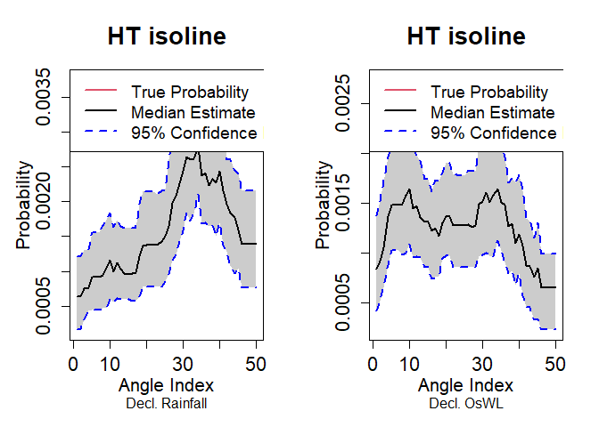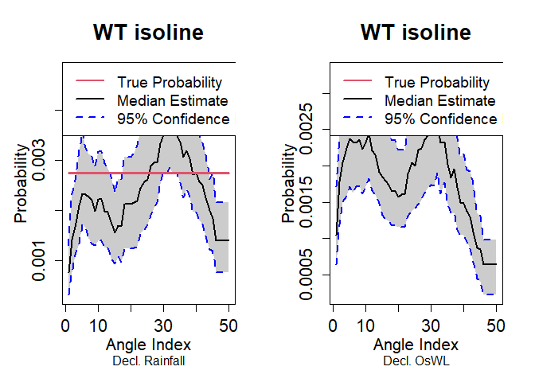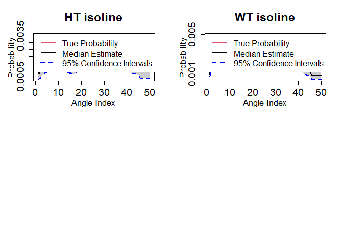
5. Trivariate analysis
The package contains three higher dimensional approaches are implemented to model the joint distribution of rainfall, O-sWL and groundwater level. They are:
- Standard (trivariate) copula
- Pair Copula Construction
- Heffernan and Tawn (2004)
Standard (trivariate) copula
In the package, each approach has a _Fit and _Sim function. The latter requires a MIGPD object as its Marginals input argument, in order for the simulations on to be transformed back to the original scale. The
Migpd_Fit command fits independent GPDs to the data in each row of a dataframe (excluding the first column if it is a “Date” object) creating a MIGPD object.
S20.Migpd<-Migpd_Fit(Data=S20.Detrend.Declustered.df[,-1],Data_Full = S20.Detrend.df[,-1],
mqu=c(0.975,0.975,0.9676))
summary(S20.Migpd)##
## A collection of 3 generalized Pareto models.
## All models converged.
## Penalty to the likelihood: gaussian
##
## Summary of models:
## Rainfall OsWL Groundwater
## Threshold 1.6000000 1.9385406 2.8599327
## P(X < threshold) 0.9750000 0.9750000 0.9676000
## sigma 0.9040271 0.1574806 0.3083846
## xi 0.1742220 0.2309118 -0.3441421
## Upper end point Inf Inf 3.7560295Standard (trivariate) copula are the most conceptually simple of the copula based models, using a single parametric multivariate probability distribution as the copula. The Standard_Copula_Fit() function fits elliptic (specified by Gaussian or tcop) or Archimedean (specified by Gumbel,Clayton or Frank) copula to a trivariate dataset. Let first fit a Gaussian copula
S20.Gaussian<-Standard_Copula_Fit(Data=S20.Detrend.df,Copula_Type="Gaussian")From which the Standard_Copula_Sim() function can be used to simulate a synthetic record of N years
S20.Gaussian.Sim<-Standard_Copula_Sim(Data=S20.Detrend.df,Marginals=S20.Migpd,
Copula=S20.Gaussian,N=100)Plotting the observed and simulated values
S20.Pairs.Plot.Data<-data.frame(rbind(na.omit(S20.Detrend.df[,-1]),S20.Gaussian.Sim$x.Sim),
c(rep("Observation",nrow(na.omit(S20.Detrend.df))),
rep("Simulation",nrow(S20.Gaussian.Sim$x.Sim))))
colnames(S20.Pairs.Plot.Data)<-c(names(S20.Detrend.df)[-1],"Type")
pairs(S20.Pairs.Plot.Data[,1:3],
col=ifelse(S20.Pairs.Plot.Data$Type=="Observation","Black",alpha("Red",0.3)),
upper.panel=NULL,pch=16)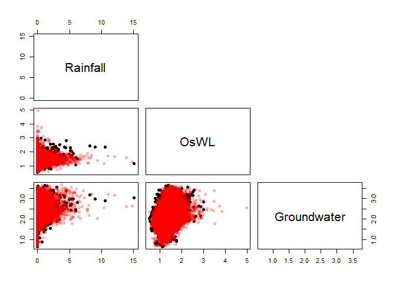
The Standard_Copula_Sel() function can be used to deduce the best fitting in terms of AIC
Standard_Copula_Sel(Data=S20.Detrend.df)Pair Copula Construction
Standard trivariate copulas lack flexibility to model joint distributions where heterogeneous dependencies exist between the variable pairs. Pair copula constructions construct multivariate distribution using a cascade of bivariate copulas (some of which are conditional). As the dimensionality of the problem increases the number of mathematically equally valid decompositions quickly becomes large. Bedford and Cooke (2001,2002) introduced the regular vine, a graphical model which helps to organize the possible decompositions. The Canonical (C-) and D- vine are two commonly utilized sub-categories of regular vines, in the trivariate case a vine copula is simultaneously a C- and D-vine. Let’s fit a regular vine copula model
S20.Vine<-Vine_Copula_Fit(Data=S20.Detrend.df)From which the Vine_Copula_Sim() function can be used to simulate a synthetic record of N years
S20.Vine.Sim<-Vine_Copula_Sim(Data=S20.Detrend.df,Vine_Model=S20.Vine,Marginals=S20.Migpd,N=100)Plotting the observed and simulated values
S20.Pairs.Plot.Data<-data.frame(rbind(na.omit(S20.Detrend.df[,-1]),S20.Vine.Sim$x.Sim),
c(rep("Observation",nrow(na.omit(S20.Detrend.df))),
rep("Simulation",nrow(S20.Vine.Sim$x.Sim))))
colnames(S20.Pairs.Plot.Data)<-c(names(S20.Detrend.df)[-1],"Type")
pairs(S20.Pairs.Plot.Data[,1:3],
col=ifelse(S20.Pairs.Plot.Data$Type=="Observation","Black",alpha("Red",0.3)),
upper.panel=NULL,pch=16)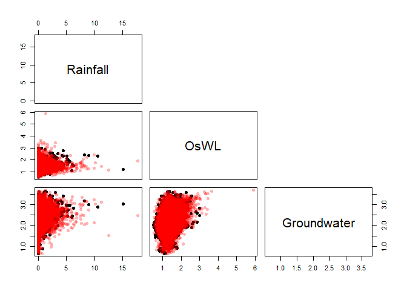
HT04
Finally, let us implement the Heffernan and Tawn (2004) approach, in which a non-linear regression model is fitted to joint observations where a conditioning variable exceeds a specified threshold. The regression model typically adopted is: where:
is a set of variables transformed to a common scale
is the set of variables excluding
and
are vectors of regression parameters
is a vector of residuals
The dependence structure when a specified variable is extreme is thus captured by the regression parameters and the joint residuals. The procedure is repeated, conditioning on each variable in turn, to build up the joint distribution when at least one variable is in an extreme state. The HT04 command fits the model and simulates N years’ worth of data from the fitted model.
S20.HT04<-HT04(data_Detrend_Dependence_df=S20.Detrend.df,
data_Detrend_Declustered_df=S20.Detrend.Declustered.df,
u_Dependence=0.995,Migpd=S20.Migpd,mu=365.25,N=1000)Output of the function includes the three conditional Models, proportion of occasions where each variable is most extreme given at least one variable is extreme propas well as, the simulations on the transformed scale u.Sim (Gumbel by default) and original scale x.Sim. Let’s view the fitted model when conditioning on rainfall
S20.HT04$Model$Rainfall## mexDependence(x = Migpd, which = colnames(data_Detrend_Dependence_df)[i],
## dqu = u_Dependence, margins = "laplace", constrain = FALSE,
## v = V, maxit = Maxit)
##
##
## Marginal models:
##
## Dependence model:
##
## Conditioning on Rainfall variable.
## Thresholding quantiles for transformed data: dqu = 0.995
## Using laplace margins for dependence estimation.
## Log-likelihood = -108.5807 -84.53349
##
## Dependence structure parameter estimates:
## OsWL Groundwater
## a 1.0000 0.3295
## b 0.6948 -1.5240
S20.HT04$Propand the which the proporiton of the occasions in the original sample that rainfall is the most extreme of the drivers given that at least one driver is extreme.
The HT04 approach uses rejection sampling to generate synthetic records. The first step involves sampling a variable, conditioned to exceed the u_Dependence threshold. A joint residual associated with the corresponding regression is independently sampled and other variables estimated using the fitted regression parameters. If the variable conditioned to be extreme in step one is not the most extreme the sample is rejected. The process is repeated until the relative proportion of simulated events where each variable is a maximum, conditional on being above the threshold, is consistent with the empirical distribution. Labeling the simulations S20.HT04.Sim
S20.HT04.Sim<-S20.HT04$x.simand now plotting the simulations from the HT04 model
S20.Pairs.Plot.Data<-data.frame(rbind(na.omit(S20.Detrend.df[,-1]),S20.HT04.Sim),
c(rep("Observation",nrow(na.omit(S20.Detrend.df))),
rep("Simulation",nrow(S20.HT04.Sim))))
colnames(S20.Pairs.Plot.Data)<-c(names(S20.Detrend.df)[-1],"Type")
pairs(S20.Pairs.Plot.Data[,1:3],
col=ifelse(S20.Pairs.Plot.Data$Type=="Observation","Black",alpha("Red",0.2)),
upper.panel=NULL,pch=16)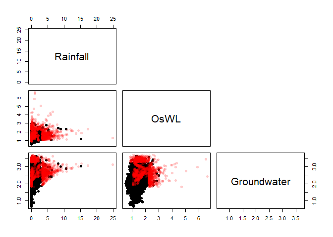
6. Sea Level Rise
The SLR_Scenarios function estimates the time required for a user-specified amount of sea level rise ( SeaLevelRise) to occur under various sea level rise scenarios. The default scenarios are for Key West from the Southeast Florida Regional Climate Change Compact (2019). Let’s calculate how long before the O-sWL in the 100-year “most-likely” design event (see section 4) equals that of the corresponding design event derived under full dependence.
#Difference in O-sWL between the most-likely and full dependence events
Diff<-S20.Bivariate$FullDependence$`100`$OsWL-S20.Bivariate$MostLikelyEvent$`100`$OsWL
Diff
#Time in years for the sea level rise to occur
SLR_Scenarios(SeaLevelRise=Diff,Unit="m")
Scenarios from the Interagency Sea Level Rise Scenario Tool (2022) for Miami Beach and Naples can be utilized by changing the Scenario and Location arguments. Alternatively, a user can input other sea level rise scenarios into the function. For example, below we use the scenarios from the same tool but for Fort Myers.
#Sea level rise scenarios for Fort Myers
head(sl_taskforce_scenarios_psmsl_id_1106_Fort_Myers)## psmsl_id process Units scenario quantile X2020 X2030 X2040 X2050
## 1 1106 total mm Low 17 79.48296 118.483 168.483 210.483
## 2 1106 total mm Low 50 101.48296 154.483 210.483 264.483
## 3 1106 total mm Low 83 123.48296 193.483 258.483 320.483
## 4 1106 total mm IntLow 17 87.48296 134.483 189.483 244.483
## 5 1106 total mm IntLow 50 109.48296 171.483 239.483 307.483
## 6 1106 total mm IntLow 83 132.48296 210.483 289.483 369.483
## X2060 X2070 X2080 X2090 X2100 X2110 X2120 X2130 X2140
## 1 248.483 285.483 313.483 336.483 361.483 389.483 417.483 442.483 465.483
## 2 309.483 350.483 383.483 412.483 453.483 493.483 531.483 566.483 601.483
## 3 378.483 421.483 462.483 505.483 566.483 619.483 674.483 725.483 777.483
## 4 306.483 369.483 431.483 492.483 550.483 612.483 675.483 732.483 792.483
## 5 374.483 442.483 512.483 577.483 646.483 722.483 798.483 877.483 955.483
## 6 445.483 521.483 603.483 680.483 767.483 858.483 952.483 1052.483 1161.483
## X2150
## 1 489.483
## 2 634.483
## 3 829.483
## 4 848.483
## 5 1033.483
## 6 1274.483
#Formatting to a data frame that can be interpreted by the tool
SeaLevelRise.2022_input<-data.frame(Year=seq(2020,2150,10),
"High"=as.numeric(sl_taskforce_scenarios_psmsl_id_1106_Fort_Myers[14,-(1:5)])/1000,
"Int_Medium"=as.numeric(sl_taskforce_scenarios_psmsl_id_1106_Fort_Myers[11,-(1:5)])/1000,
"Medium"=as.numeric(sl_taskforce_scenarios_psmsl_id_1106_Fort_Myers[8,-(1:5)])/1000,
"Int_Low"=as.numeric(sl_taskforce_scenarios_psmsl_id_1106_Fort_Myers[5,-(1:5)])/1000,
"Low"=as.numeric(sl_taskforce_scenarios_psmsl_id_1106_Fort_Myers[2,-(1:5)])/1000)
#Finding time in years for 0.8m of sea level rise to occur
SLR_Scenarios(SeaLevelRise=0.8, Scenario="Other", Unit = "m", Year=2022,
Location="Fort Myers", New_Scenario=SeaLevelRise.2022_input)
7. Simulating temporally varying events
By sampling peaks from a multivariate statistical model e.g., a vine copula that includes the relative lag between the rainfall and water level peaks as well as their magnitudes temporally-varying synthetic events can be simulated.
Water level curves
The intensity of a storm surge event is defined in Wahl et al. 2011 as the area of the water level curve above a specified base line level from the first low water level of the preceding tide and last low tide of the following tide. The intensity() function calculates this metric with the default baseline level set as the mean of the water level time series (Base_Line="Mean "). Let’s calculate the “intensity” of cluster maxima in the hourly O-sWL time series at control structure S-13.
#Decluster O-sWL series at S-13 using a runs method
S13.OsWL.Declust = Decluster(Data=S13.Detrend.df$OsWL,
SepCrit=24*7, u=0.99667)
#Calculate O-sWL of the identified cluster maximum
intensity = Intensity(Data=S13.Detrend.df[,c(1,3)],
Cluster_Max=S13.OsWL.Declust$EventsMax,
Base_Line=2)Plotting a subset of the events:
#Plotting water levels
#Converting Date_Time column to POSIXct class
S13.Detrend.df$Date_Time <- as.POSIXct(S13.Detrend.df$Date_Time,
format = "%Y-%m-%d %H:%M:%S")
plot(S13.Detrend.df$Date_Time[(S13.OsWL.Declust$EventsMax[1]-48):(S13.OsWL.Declust$EventsMax[1]+48)],
S13.Detrend.df$OsWL[(S13.OsWL.Declust$EventsMax[1]-48):(S13.OsWL.Declust$EventsMax[1]+48)],
xlab="Time", ylab="O-sWL (ft NGVD 29)",type='l',lwd=1.5)
#Adding purple points denoting preceding and following high tides
points(S13.Detrend.df$Date_Time[intensity$Pre.High[1]],
S13.Detrend.df$OsWL[intensity$Pre.High[1]],pch=16,cex=1.5,col="Purple")
points(S13.Detrend.df$Date_Time[intensity$Fol.High[1]],
S13.Detrend.df$OsWL[intensity$Fol.High[1]],pch=16,cex=1.5,col="Purple")
#Adding orange points denoting preceding and following low tides
points(S13.Detrend.df$Date_Time[intensity$Pre.Low[1]],
S13.Detrend.df$OsWL[intensity$Pre.Low[1]],pch=16,cex=1.5,col="Orange")
points(S13.Detrend.df$Date_Time[intensity$Fol.Low[1]],
S13.Detrend.df$OsWL[intensity$Fol.Low[1]],pch=16,cex=1.5,col="Orange")
#Recall BaseLine=2
baseline= 2
# Only create polygon showing intensity
above<- S13.Detrend.df$OsWL[intensity$Pre.Low[1]:intensity$Fol.Low[1]] > baseline
if(any(above)) {
runs <- rle(above)
ends <- cumsum(runs$lengths)
starts <- c(1, ends[-length(ends)] + 1)
for(j in which(runs$values)) {
start_idx <- starts[j]
end_idx <- ends[j]
x_seg <- S13.Detrend.df$Date_Time[intensity$Pre.Low[1]:intensity$Fol.Low[1]][start_idx:end_idx]
y_seg <- S13.Detrend.df$OsWL[intensity$Pre.Low[1]:intensity$Fol.Low[1]][start_idx:end_idx]
polygon(x = c(x_seg, rev(x_seg)),
y = c(y_seg, rep(baseline, length(x_seg))),
col = "dark grey", border = NA)
}
}
The WL_Curve() function generates a water level curve conditioned on a water level event peak (Peak) and “intensity” (Intensity). The function works by re-scaling observed events curves between four time units before and after the peak such that the re-scaled peak coincides with conditioned peak. It then computes the intensity of the re-scaled events and selects the event with the highest intensity that’s less than conditioned intensity. Intensity units are then added to ensure the intensity of the simulated curve matches the conditioned intensity. The Intensity units, which manifest as increases in water level, are distributed in proportion with the decreases of water levels from the peak OsWL i.e., more units are added at lower water levels. No units are added about the peak. For conditioned event peaks below a user-specified threshold (Thres) an observed curve with an intensity less than some user-specified limit (Limit) is randomly sampled.
#Four synthetic events all with intensity of 60 units
sim.peaks = c(3.4,4,4.2,5)
sim.intensity = c(60,60,60,60)
#Generating the water level curves
oswl_ts_oswl = WL_Curve(Data = S13.Detrend.df,
Cluster_Max = S13.OsWL.Declust$EventsMax,
Pre_Low = intensity$Pre.Low,
Fol_Low = intensity$Fol.Low,
Thres = S13.OsWL.Declust$Threshold, Limit = 45,
Peak = sim.peaks,
Base_Line=2,
Intensity = sim.intensity)Superimposing the four simulated water level curves on the observed curves:
#Plot the water level curves of the observed peaks
plot(-144:144,
S13.Detrend.df$OsWL[(S13.OsWL.Declust$EventsMax[1]-144):
(S13.OsWL.Declust$EventsMax[1]+144)],
xlab="Time relative to peak(hour)", ylab="O-sWL (ft NGVD 29)", type='l',ylim=c(-2,6))
for(i in 2:length(S13.OsWL.Declust$EventsMax)){
lines(-144:144,
S13.Detrend.df$OsWL[(S13.OsWL.Declust$EventsMax[i]-144):
(S13.OsWL.Declust$EventsMax[i]+144)])
}
#Superimpose the curves generated for the four synthetic events
for(i in 1:4){
lines(-144:144,oswl_ts_oswl$Series[i,],col=2)
}
Hyetographs
Serinaldi and Kilsby studied the pairwise relationships between key hyetograph characteristics: maximum value , volume
, duration
, and average intensity
at
rain gauge stations in central eastern Europe with daily rainfall records and three 5-minutes record gauges in Italy. The authors found that at both temporal scales the only stochastic relationship was between volume and duration, and that simple bootstrap procedures could be used to generate events that preserve the pairwise relationships among the characteristics. The
U_Sample function implements a bootstrap procedure referred to as the U-boot algorithm in Serinaldi and Kilsby (2013) to generate hyetograhs. For a simulated peak Xp, a duration is independently sampled and a set of non-peaks are sampled at random from one of the events with the same duration. To implement the method exactly as in Serinaldi and Kilsby (2013), set Xp equal to a sample (taken with replacement) of the observed cluster maximum (peaks). An example application of the function is given below for rainfall recorded at control structure S-13. First the hourly time series is declustered to find the characteristics of the rainfall events containing the highest peaks:
#First decluster the rainfall series to find the 500 events
#with the highest peaks
S13.Rainfall.Declust = Decluster(Data=S13.Detrend.df$Rainfall,
SepCrit=24*3, u=0.99667)
#Hourly peaks
peaks = S13.Detrend.df$Rainfall[S13.Rainfall.Declust$EventsMax]
#Set very small rainfall measurements to zero.
#Assumed to be the result of uncertainty in measuring equipment.
S13.Detrend.df$Rainfall[which(S13.Detrend.df$Rainfall<0.01)] = 0
#Find NAs in rainfall series
z = which(is.na(S13.Detrend.df$Rainfall)==T)
#Temporarily set NAs to zero
S13.Detrend.df$Rainfall[z] = 0
#Find times where there is 6-hours of no rainfall
no.rain = rep(NA,length(S13.Detrend.df$Rainfall))
for(i in 6:length(S13.Detrend.df$Rainfall)){
no.rain[i] = ifelse(sum(S13.Detrend.df$Rainfall[(i-5):i])==0,i,NA)
}
#Remove NAs from results vector as these correspond to times where there is
#rainfall at certain points in the 6 hour period.
no.rain = na.omit(no.rain)
#Reset missing values in the rainfall record back to NA
S13.Detrend.df$Rainfall[z] = NA
#Find the start and end times of the 500 events.
start = rep(NA,length(S13.Rainfall.Declust$EventsMax))
end = rep(NA,length(S13.Rainfall.Declust$EventsMax))
for(i in 1:length(S13.Rainfall.Declust$EventsMax)){
start[i] = max(no.rain[which(no.rain<S13.Rainfall.Declust$EventsMax[i])])
end[i] = min(no.rain[which(no.rain>S13.Rainfall.Declust$EventsMax[i])])
}
start = start + 1
end = end - 6
d = end - start + 1 #Duration
#Simulate some peaks by sampling observed peaks with replacement
#I.e., applying the method exactly as in Serinaldi and Kilsby (2013)
sim.peak = sample(peaks,size=500,replace=TRUE)Now the bootstrapping procedure can be carried out:
sample = U_Sample(Data=S13.Detrend.df$Rainfall,
Cluster_Max=S13.Rainfall.Declust$EventsMax,
D=d,Start=start,End=end,
Xp=sim.peak)Let’s check whether the characteristic of the bootstrapped events match those of the observed events. First, calculating the volume and intensity of the observed events with the highest hourly peaks.
#Calculating volume and intensity
v<-rep(NA,500)
for(i in 1:length(S13.Rainfall.Declust$EventsMax)){
v[i] = sum(S13.Detrend.df$Rainfall[(start[i]):(end[i])])
}
I = v/d
#Putting in a data.frame
observations = data.frame(peaks,d,v,I)
colnames(observations) = c("peak","d","v","I")To aid the comparison information relating to the marginal distributions of the characteristics is removed by transforming the data to the scale.
#Observations
observations.u = data.frame(pobs(observations))
colnames(observations.u) = c("peak","d","v","I")
#Sample
sample.u = data.frame(pobs(sample))Scatter plots showing the pairwise relationships of the characteristics:
#Layout of the plots
par(mfrow=c(4,6))
par(mar=c(4.2,4.2,0.1,0.1))
#Characteristics of observations on original scale
plot(observations$peak,observations$I,pch=16,xlab="",ylab="",cex.axis=1.25)
mtext(expression('X'[p]),side=1,line=3)
mtext("I",side=2,line=2.3)
plot(observations$peak,observations$v,pch=16,xlab="",ylab="",cex.axis=1.25)
mtext(expression('X'[p]),side=1,line=3)
mtext("V",side=2,line=2.3)
plot(observations$peak,observations$d,pch=16,xlab="",ylab="",cex.axis=1.25)
mtext(expression('X'[p]),side=1,line=3)
mtext("D",side=2,line=2.3)
plot(observations$I,observations$v,pch=16,xlab="",ylab="",cex.axis=1.25)
mtext("I",side=1,line=2.5)
mtext("V",side=2,line=2.3)
plot(observations$I,observations$d,pch=16,xlab="",ylab="",cex.axis=1.25)
mtext("I",side=1,line=2.5)
mtext("D",side=2,line=2.3)
plot(observations$v,observations$d,pch=16,xlab="",ylab="",cex.axis=1.25)
mtext("V",side=1,line=2.5)
mtext("D",side=2,line=2.3)
#Characteristics of sample on original scale
plot(sample$Xp,sample$I,pch=16,xlab="",ylab="",cex.axis=1.25,col=2)
mtext(expression('X'[p]),side=1,line=3)
mtext('I',side=2,line=2.3)
plot(sample$Xp,sample$V,pch=16,xlab="",ylab="",cex.axis=1.25,col=2)
mtext(expression('X'[p]),side=1,line=3)
mtext('V',side=2,line=2.3)
plot(sample$Xp,sample$D,pch=16,xlab="",ylab="",cex.axis=1.25,col=2)
mtext(expression('X'[p]),side=1,line=3)
mtext("D",side=2,line=2.3)
plot(sample$I,sample$V,pch=16,xlab="",ylab="",cex.axis=1.25,col=2)
mtext('I',side=1,line=2.5)
mtext('V',side=2,line=2.3)
plot(sample$I,sample$D,pch=16,xlab="",ylab="",cex.axis=1.25,col=2)
mtext('I',side=1,line=2.5)
mtext("D",side=2,line=2.3)
plot(sample$V,sample$D,pch=16,xlab="",ylab="",cex.axis=1.25,col=2)
mtext('V',side=1,line=2.5)
mtext("D",side=2,line=2.3)
#Characteristics of observations on the [0,1] scale
plot(observations.u$peak,observations.u$I,pch=16,xlab="",ylab="",cex.axis=1.25)
mtext(expression('X'[p]),side=1,line=3)
mtext('I',side=2,line=2.3)
plot(observations.u$peak,observations.u$v,pch=16,xlab="",ylab="",cex.axis=1.25)
mtext(expression('X'[p]),side=1,line=3)
mtext('V',side=2,line=2.3)
plot(observations.u$peak,observations.u$d,pch=16,xlab="",ylab="",cex.axis=1.25)
mtext(expression('X'[p]),side=1,line=3)
mtext('D',side=2,line=2.3)
plot(observations.u$I,observations.u$v,pch=16,xlab="",ylab="",cex.axis=1.25)
mtext('I',side=1,line=2.5)
mtext('V',side=2,line=2.3)
plot(observations.u$I,observations.u$d,pch=16,xlab="",ylab="",cex.axis=1.25)
mtext('I',side=1,line=2.5)
mtext('D',side=2,line=2.3)
plot(observations.u$v,observations.u$d,pch=16,xlab="",ylab="",cex.axis=1.25)
mtext('V',side=1,line=2.5)
mtext('D',side=2,line=2.3)
#Characteristics of sample on the [0,1] scale
plot(sample.u$Xp,sample.u$I,pch=16,xlab="",ylab="",cex.axis=1.25,col=2)
mtext(expression('X'[p]),side=1,line=3)
mtext('I',side=2,line=2.3)
plot(sample.u$Xp,sample.u$V,pch=16,xlab="",ylab="",cex.axis=1.25,col=2)
mtext(expression('X'[p]),side=1,line=3)
mtext('V',side=2,line=2.3)
plot(sample.u$Xp,sample.u$D,pch=16,xlab="",ylab="",cex.axis=1.25,col=2)
mtext(expression('X'[p]),side=1,line=3)
mtext("D",side=2,line=2.3)
plot(sample.u$I,sample.u$V,pch=16,xlab="",ylab="",cex.axis=1.25,col=2)
mtext('I',side=1,line=2.5)
mtext('V',side=2,line=2.3)
plot(sample.u$I,sample.u$D,pch=16,xlab="",ylab="",cex.axis=1.25,col=2)
mtext('I',side=1,line=2.5)
mtext("D",side=2,line=2.3)
plot(sample.u$V,sample.u$D,pch=16,xlab="",ylab="",cex.axis=1.25,col=2)
mtext('V',side=1,line=2.5)
mtext("D",side=2,line=2.3)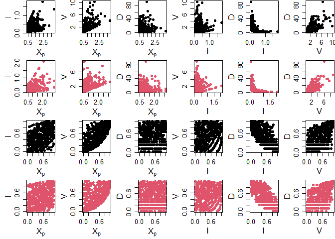
The figure demonstrates that the simulated events preserves the key characteristics of the observed events.